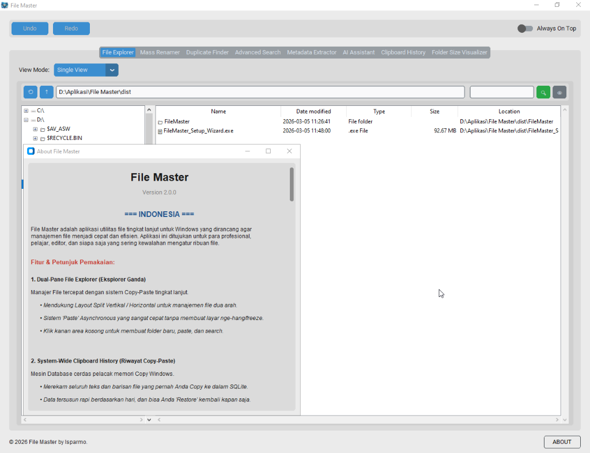

Berapa Jam yang Anda SIA-SIAKAN Hanya untuk Mencari Satu File?
Waktu Anda tidak bisa diputar kembali. Jangan habiskan untuk pekerjaan manual mengatur folder. Biarkan AI mengambil beban itu sebelum Anda kehilangan satu hari produktif lagi karena kekacauan digital.
Jangan tunggu sampai hard drive Anda penuh untuk mulai merapikannya.

Apa Akibat dari Ruang Kerja yang BERANTAKAN?
Produktivitas Hilang
Berhenti membuang 30+ menit setiap hari hanya untuk mengganti nama file atau mencari satu PDF. Itu lebih dari 180 jam setahun yang hilang selamanya.
Ruang Disk Terbuang
PC Anda sesak karena file duplikat. Jangan membayar penyimpanan cloud mahal hanya karena Anda tidak punya alat untuk membersihkan drive lokal Anda.
Kekacauan yang Tidak Terkendali
Menamai ratusan file satu per satu adalah siksaan mental. Jangan biarkan proyek Anda membusuk karena penamaan "folder_baru_final_v2".
Fitur Lengkap yang Menyelamatkan Masa Depan Anda
🚀 Dual-Pane File Explorer
Kelola file 2x lebih cepat dengan dua panel berdampingan. Sistem Copy-Paste Asinkron memastikan aplikasi tetap lancar tanpa hang saat memproses file besar. Mendukung layout vertikal dan horizontal untuk fleksibilitas maksimal.
🤖 AI Assistant (Gemini Core)
Tanya apa saja pada file Anda. Ringkas dokumen PDF atau Word yang tebal dalam hitungan detik. AI kami membaca untuk Anda agar Anda bisa fokus pada keputusan penting, bukan filler.
📋 System-Wide Clipboard History
Mencatat setiap teks dan file yang Anda copy ke dalam database SQLite yang aman. Anda bisa merestore item yang Anda copy hari ini, kemarin, atau minggu lalu dengan satu klik.
🏷️ Image Auto-Tagging
AI otomatis mengenali objek dalam foto Anda. Mencari koleksi 'pantai', 'dokumen', atau 'mobil' kini instan tanpa perlu memberi kategori secara manual.
📝 Mass Renamer Pro
Ubah nama ribuan file sekaligus dengan pola penamaan cerdas yang fleksibel. Sangat efisien untuk fotografer, videografer, dan pengarsip data skala besar.
📷 Metadata Extractor
Akses detail teknis mendalam (Aperture, ISO, focal length) bahkan untuk format RAW profesional. Alat wajib bagi fotografer digital.
🔒 Encrypted Vault & Shredder
Amankan file sensitif Anda dengan enkripsi AES-256 tingkat militer. Gunakan fitur Shredder untuk menghancurkan file secara permanen melampaui kemampuan software recovery.
🔍 Duplicate Finder & Search
Temukan file duplikat tersembunyi dan hapus instan untuk menghemat ruang disk. Pencarian cerdas menemukan file Anda sedalam apapun folder penyimpanannya.
📊 Folder Size Visualizer
Dapatkan peta visual penyimpanan PC Anda. Identifikasi seketika folder mana yang 'mencuri' ruang penyimpanan Anda dengan representasi grafis yang jelas.
Hentikan Kerugian Anda Sekarang.
Kekacauan data adalah bom waktu. Download File Master sekarang dan ambil kendali penuh atas waktu dan produktivitas Anda.
Selamatkan PC Saya Sekarang